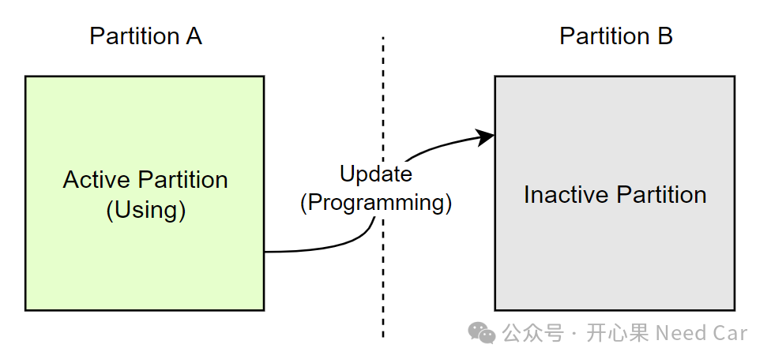
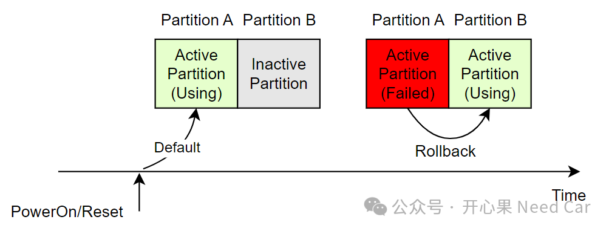
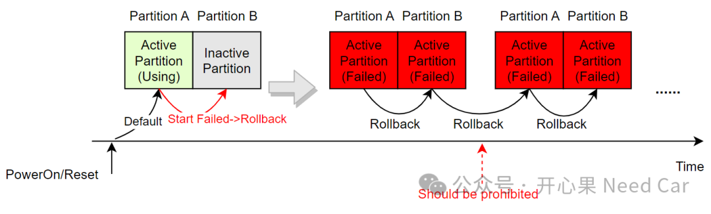
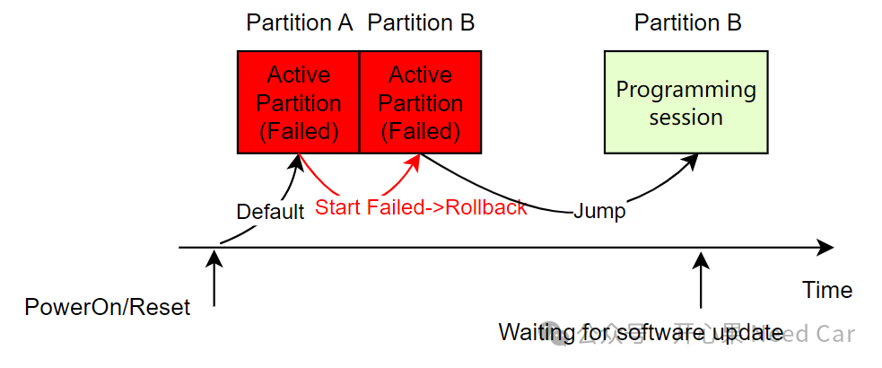
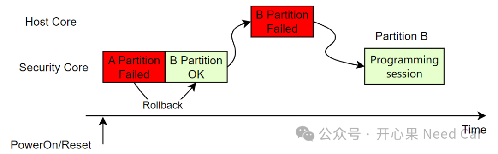
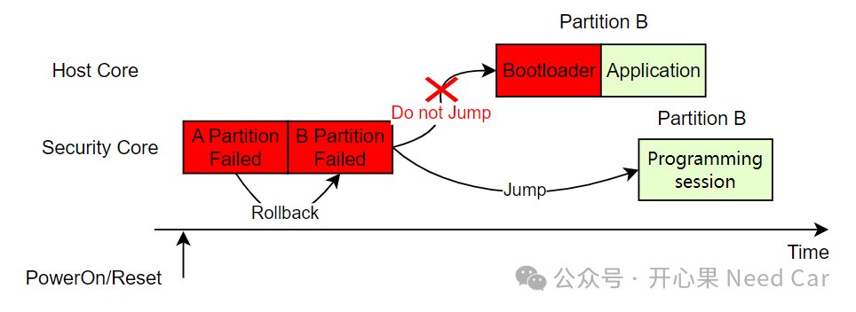

开心果 Need Car · 2024-02-11T07:57:00+08:00 · 微信原文
随着车载MCU性能和资源的提升，“A/B分区（Partition）”、“回滚策略”、“无感刷写”、“静默刷写”...这些概念已不再虚无缥缈，而是逐步走向落地，实现量产化。首先，得益于MCU级车载芯片资源的提升，不然，A/B分区也就无从谈起。有了A/B分区，静默刷写也就水到渠成了。虽然概念和目标是好的，但是，并不意味着开发会一帆风顺。本文，就A/B分区和回滚策略，聊一些实现需要思考的点。
1、A/B分区简述
什么是A/B分区系统呢？答：A分区或者B分区系统独立，两者之间可以相互切换的系统。那么，为什么需要这样的系统呢？答：在没有A/B功能之前，车辆控制器的刷写需要车辆停车，满足一定的安全刷写条件后，使用诊断仪或者其他上位机刷写。这一系列的操作，费时费力。为了最大程度的节省刷写时间，给用户更好的升级体验，静默刷写来了。而静默刷写建立的基础就是A/B功能，即：激活的分区，可以在车辆运行的过程中更新非激活分区。A/B分区示意如下：


2、A/B实现过程中的问题思考
Q1：非激活分区完成更新以后，何时切换分区？



但是，如上有一个点需要解决：用户的Bootloader程序怎么知道Security Core曾经回滚过？所以，在软件设计时，需要Security Core将自身回滚过的信息存储在Host Core也可访问的位置，以便于Host知道Security Core曾经回滚过，让Host Core不要再次回滚，否则，将会无限循环回滚。
Q6：信息安全Core校验用户Bootloader均失败，如何处理？
A6：Security Core在A分区校验用户Bootloader失败以后，回滚到B分区，在B分区再次校验用户的Bootloader程序，再次失败，此时，出于安全考虑，程序应该进入编程会话，等待升级，示意如下：

往期精彩回顾
诊断基础：不同会话(Session)，诊断报文如何维持网络状态？
如何基于HighTec，在链接文件（*.lsl）中设置自定义段
Bootloader开发：队列刷写（Queued Flash）基础